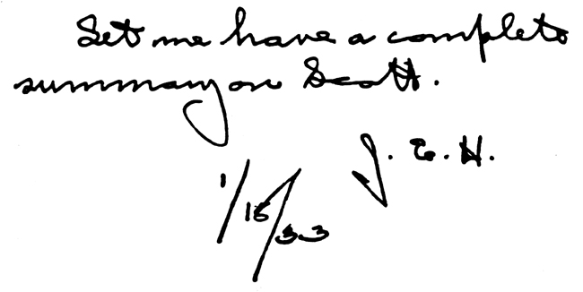

|
|
Search |
Several years ago John Taube contacted the FBI, requesting, via the Freedom of Information Act, their files on Technocracy. He got a 40 page packet, which he brought with him to the Annual Labour Day event in Aldergrove, B.C.
The first page contained a letter, dated January 1933, from an FBI agent to the director of the FBI, about Howard Scott and the just-started Technocracy movement. At the bottom of the page was a handwritten note: 
This was the best find in the whole 40 page packet. J. Edgar Hoover, himself, was requesting more information about Howard Scott. I like to call this the ``J. Edgar Hoover Stamp of Approval.''
John Taube was told that there are 12,000 pages on Technocracy in the FBI Washington office and 2,000 pages in the N.Y office.